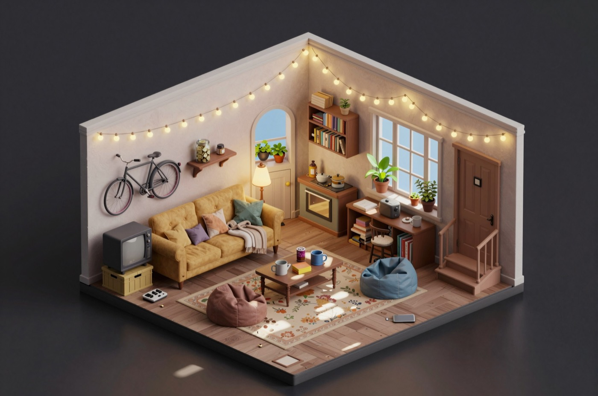

Trapped in the game
Four thousand people logged into a game and the log-out button is gone. Somebody has to clear the fourteenth floor, and the only people who have seen the boss room are the ones who did not come back.
It is nine weeks in. The novelty is over and it has settled into something worse and more interesting: a town, an economy, jobs, rents, debts, people who are good at this and people who are not. Somebody runs the tavern. Somebody is buying up healing potions. Everyone has worked out who they would rather not be in a party with.
This world is not built. It is a sketch, written to show that the machinery underneath Tremont is not about cities.

The people
Haldren leads the Ninth Lantern and wants the fourteenth floor cleared under his banner, because a guild that clears a floor gets first refusal on the next one. What it costs him: he has a partial map of the boss room, drawn from what two dead scouts said before they went in, and he has not shared it. Share it and he loses the floor to whoever is faster. Keep it, and people die on the approach who would not have, and somebody will work that out.
Sela is the one scout who got out. She wants to stop being the person everybody asks about the arch: what she saw, exactly where she was standing, whether the thing followed. What it costs her is that she is the only firsthand account of the approach in the entire town, so what she says is worth something, and every version she does not correct becomes true somewhere she is not standing.
Wick lends, and wants a return on eleven loans out at once. What it costs him is the death rule. A debt in a world where the debtor can be permanently deleted is not really a loan, it is a bet on somebody surviving, and everybody knows it. So his interest is priced on how likely you are to come back, which makes his ledger the most honest reputation system in the town, and he would rather nobody noticed that.
Mira keeps the inn on the fourteenth floor and wants a quiet house and the beds full. Up at five, banks the fire, behind the bar from noon, asleep by eleven. She knows the names of everybody who drinks there and which of them are behind on their board. It costs her nothing yet, because she does not know she is an NPC and nobody has been unkind enough to tell her.
The place
The Arch House: an inn built into the ruin of a gate arch, half an hour up the road from the boss gate and the last building with a door on it before the fields. A common room, six rooms upstairs, and a back room the Ninth Lantern have taken over and mostly keep shut. Everybody going to the gate passes through it. Everybody coming back stops.
What is already going wrong
The safe corner
Sela got out because the things chasing her did not follow past a particular arch. She said so once, at the Arch House, the night she came back: there is a spot by the arch where nothing comes at you.
She told one person, because that is what people do. A friend, and maybe another tomorrow. It was a good story, so it moved the same night rather than waiting. By the third telling the confidence is down, the distortion is up, and the number has grown the way numbers do: the safe corner is now a safe stretch along the whole north wall. By the fourth, the name has drifted and somebody is attributing it to a different scout entirely, the substitute drawn from people the listener knows, because a story mutates towards the world of whoever is holding it.
Eleven people now hold a version of this and three of them are wrong in a way that will get them killed. Sela holds it firsthand, which never decays, and she is the only person who could correct it: if she is in the room, if she hears it said, and if she is not up on the twelfth floor that evening because that is where her day put her.
The mechanic: gossip distortion. Nobody wrote the wrong version. Four people passed on what they had.
What six people signed on Tuesday
Before the gate, the Ninth Lantern put it in writing, the way raid groups do. Nobody goes past the second pillar alone. The tank calls the retreat and nobody argues. Loot is split before we go in, not after. If anybody says fall back, that is the end of it. A safeword that ends everything the instant it is spoken, at no cost to whoever says it. Either side can walk away at any moment, for any reason.
Then somebody went past the second pillar alone, and two people did not come back.
Three things follow. The terms remember it. The other five think meaningfully less of him, more than they would for missing a meeting, because breaking something you put your name to twenty minutes ago is a statement about you. And a fact is written that gossip can carry: not the clause, which is the guild's business, but the breaking of it, which is a story. By next week half the floor knows he does not do what he agreed to, and in a world with a death rule nobody parties with a man whose word is soft.
What does not happen: the agreement does not dissolve. Ending it is the other five's move, not the world's.
The mechanic: signed terms, with a cost for breaking them.
And the back room
Haldren's map is a thing one person holds. When he takes two officers into the back room of the Arch House and shuts the door, everybody in the common room learns exactly two things: who went in, and that the door shut. Not a word of what is said in there reaches them.
But those two facts are interesting, and interesting facts travel. By closing time somebody has mentioned it to somebody. By Thursday there is a rumour that the Ninth Lantern have a map, held at about half confidence, with the wrong officer's name on it.
The mechanic: doors, and who can hear. A shut door does not hide that it was shut.
Why the floor boss is a clock
Give the boss a deadline, such as a field that empties or a floor that seals, and every arrangement in the town is suddenly measured against it. People leave in time for things. Somebody stands somebody else up and there is a real cost. You can skip three days to be ready, and the world lives those three days: the rumour spreads further, two more loans come due, Mira takes a delivery, and somebody you were counting on takes a contract with another guild because you were not there to ask.
The mechanic: plans and time skips. Nothing is fast-forwarded past.
What you would actually write
Floors are districts. The road to the gate is a street with minutes on it. The inn is a building with rooms and a door. Mira has a timetable. Col is a declared quantity, conserved, so the only way to have more is for somebody else to have less. Lives are a declared quantity too, with a floor of zero and no way back. The guild's agreement is a term with six clauses and a safeword. The map is a fact one person believes.
None of that is a feature written for fantasy. It is the same list of things Tremont is made of.